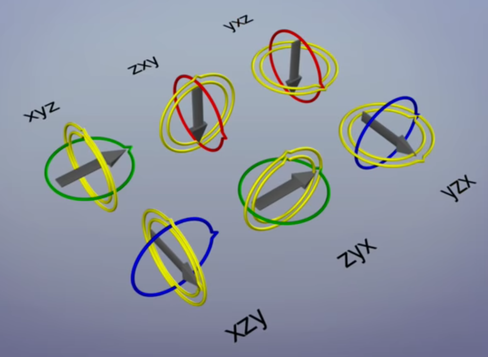

Gimbal Lock 1

Gimbal Lock 2
Illustration of the problem of using Euler angle to bring the problem of Gimbal Lock.
In robotics and computer vision, we often need to choose multiple coordinate frames to reflect the motion of cameras, different links reference to a common selected world frame, aka inertial frame. The transformation between these frames is denoted as a transformation matrix $\mathbf{T}$,
its inverse is
where $\mathbf{R}$ is a rotation matrix, $\mathbf{t}$ is a translation vector. The transformation describe a relative motion, so we have to specify the motion is in relative to which frame. For example, we define the pose of the camera frame $C$ expressed in the world frame $W$ as $\mathbf{T}_{WC}$, which means frame C seen from frame W. Assume a robot moves with a onboard camera. Robot Body frame is $B$, the pose of the camera frame $C$ expressed in the robot body frame $B$ is $\mathbf{T}_{BC}$. The robot pose can be expressed as,
The pose indicating transformation from body frame $B$ seen from world frame $W$, which indicating the motion of the robot body, is a transform of a 3D landmark point $\mathbf{X}$ from the body frame $B$ to the world frame $W$.
And the transformation from world frame $W$ to body frame $B$ is the inverse of the above transformation,
We will give a illustration of the inverse of the pose in the next section.
Let's start with a 2D example, 2-dimensional rotation matrix is denoted as:
rotation $\mathbf{R}$ rotates vectors in the plane by $\theta$ degrees counterclockwise.
Extend to 3-dimensional rotation matrix:
$\mathbf{R}$ is orthogonal matrix and its determinant equals to 1.
Try to prove the determinant of $\mathbf{R}$ is 1?
If the determinant of a matrix is 1, it means the transformation preserves the volume of the linear space — it does not scale it.
These properties make rotation matrix very unique, it is not just a matrix, but actually a manifold, more specifically, a Lie Manifold and also a Lie Group. So $\mathbf{R}$ is a $n$ dimensional Special Orthogonal (SO) Group, which is,
The rigid body transform $\mathbf{T}$ contains both rotation and translation, we form a Lie Manifold which is Special Euclidean Group, SE(3).
We will talk about more details about Lie Group and Lie Algebra in the next lecture.
So can we just use a 3D vector which contains the rotation angles around x, y, z axes, to represent the rotation? The answer is no since it will bring the problem of Gimbal Lock, shown in the following figure.
Although it is OK to represent the 3D rotation by 3 by 3 rotation matrix, it is not the best way to do so since we are literally using 9D vector to represent the a 3D rotation. To solve this problem, we can use a 4D vector to represent the rotation, which is called Quaternion, which in
where $q_x, q_y, q_z$ are the imaginary parts, or called vector part, and $q_w$ is the real part, or called scalar part.
if a point $\mathbf{P}$, its coordinate is transformed by $\mathbf{R}_1$ to $\mathbf{P}_1$, then by $\mathbf{R}_2$ to $\mathbf{P}_2$, without translation, we have,
if a point $\mathbf{P}$, its coordinate is transformed by by $\mathbf{t}_1$ to $\mathbf{P}_1$, then by $\mathbf{t}_2$ to $\mathbf{P}_2$, without rotation, we have,
Suppose a point $\mathbf{P}$, its coordinate is transformed by [$\mathbf{R}_1$, $\mathbf{t}_1$] to $\mathbf{P}_1$, Then transformed by [$\mathbf{R}_2$, $\mathbf{t}_2$] to $\mathbf{P}_2$.
Multiple transformations cannot be described in a uniform way. How do we solve this problem?
The answer is to represent $\mathbf{P}$ in homogeneous coordinates.
Thus, it can represent the transformations from $\mathbf{P}$ to $\mathbf{P}_1$, then to $\mathbf{P}_2$ in a uniform way.
Original coordinate of 3D point $\mathbf{P}$ and $\mathbf{P}$ in homogeneous coordinates,
Homogeneous coordinate is defined only up to scale, all of them represents the same 3D coordinate
where $s$ is a scalar.
Let's take a look at this example, the body frame equals to apply a 90 degree counterclockwise rotation around the z-axis. The pose of the body here is simply
Given a point $\mathbf{X}_W$ in the world frame,
The point in body frame is
The coordinate convention usually consists of left-hand and right-hand system. To tell if a coordinate system is left-hand or right-hand, we just thumbs up for both hands. The direction of the thumb is the direction of the z-axis, and the direction of the fingers is the direction of the x-axis to y-axis. Right hand system is more common, but some softwares like Unity and UnrealEngine do uses left hand system.
The confusing part usually not just from the left and right hand system, but also from the difination of X, Y, Z axis. For example, in ROS, X axis is forward, Y is left and Z is up. Different softwares also uses different coordinate conventions. OpenCV, COLMAP, Open3D usually follow the same convention, ROS, OpenGL all use different conventions. The following figures the illustration of the different conventions.
The problem then is how to convert the coordinate convention between different softwares. The answer is to use the a rotation matrix. This is also called change of basis in linear algebra.
We first start with converting a reference 3D landmark point $\mathbf{X}$ (in homogeneous coordinates), from the OpenCV convention to ROS convention. The same point will have different coordinates in different conventions, obviously.
So what are we doing here? It's actually quite intuitive, the resultant X-axis in ROS equals to the Z-axis in OpenCV, the Y-axis in ROS is the flip of the X-axis in OpenCV, and the Z-axis in ROS is the flip of the Y-axis in OpenCV. The camera pose in world frame is,
The tricky part comes from converting a transformation, aka a pose, from one convention to another. We will have to do a little derivation here. In Visual odometry or geometric vision, assume we compute the relative pose $\mathbf{T}_{C_0C}$ between the current frame $C$ and the first frame $C_0$, and also reconstruct a 3D landmark point $\mathbf{X}$ in the first frame $C_0$.
And in general, the conversion between two conventions is,
This equation can easily be proved, assume we have a pose $\mathbf{T}_{AB}$, indicating the pose of frame B in frame A. We want to get the pose of frame D in frame C. And we know the conversion A $\rightarrow$ C, meaning transform a point from A to C, denoted as $\mathbf{T}_{CA}$, B $\rightarrow$ D, meaning transform of a point from B to D, denoted as $\mathbf{T}_{DB}$. Here B and D are camera frames, and A and C are world frames.